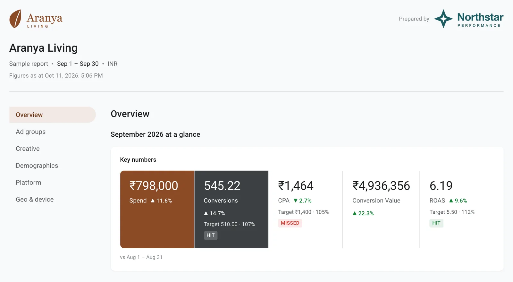
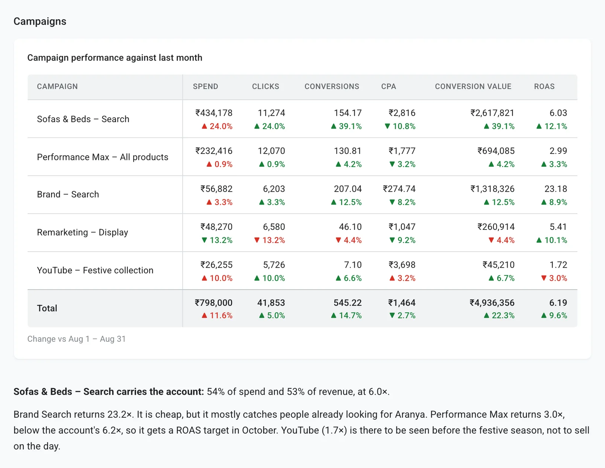
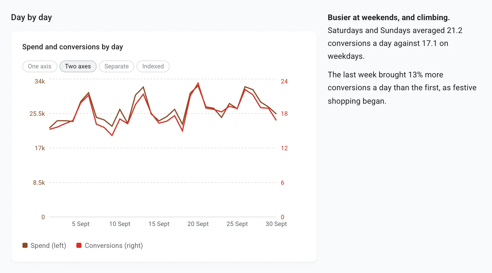

For freelancers and small agencies running Google Ads and Meta Ads
Report on and launch Google Ads and Meta campaigns, by describing them to Claude.
Set up each client's report once, refresh it from live data whenever you're ready, and send your client a link to the figures you've checked. When a client needs a new campaign, Roster drafts it with you and creates it paused, only after your yes.
Free during early access. No card needed.

- Nothing changes without your yes Every campaign is shown to you in full first, and created paused.
- Live Google Ads and Meta data Figures come straight from the client's accounts.
- Free during early access Every client and every report, no card needed.
What Roster does
Reports and campaign setup for the two platforms most clients spend on, from one workspace per client.
- Google Ads reporting Client reports built from live Google Ads data, under your agency's name, sent as one link.
- Meta Ads reporting The same for Facebook and Instagram ads, with the conversion that matters to the client.
- Google Ads campaign creation Search, Display, Performance Max and Demand Gen campaigns, drafted with you and created paused.
- Meta Ads campaign creation Traffic, sales and leads campaigns for Facebook and Instagram, drafted with you and created paused.
How it works
The first report for a client takes a few minutes. After that, each month's report is ready without you rebuilding anything.
-
Step 1
Add a client
Create a workspace for the client and sign in with the Google or Facebook login that manages their ads. Pick the ad accounts that belong to them.
-
Step 2
Describe the report
Tell Claude what the client should see. Roster checks the account and shows you the real figures before anything is saved.
“A monthly report for Aranya Living: key numbers against last month, a daily trend, every campaign, and the split by device.”
-
Step 3
Send one link
Add your own summary, then share the link. Your client opens it in any browser. No login, no PDF.
What your client receives
A clean, consistent report every month, in the client's own currency and under your agency's name, with your notes beside the charts they explain.
Every campaign, side by side
Spend, clicks, conversions, cost per conversion and ROAS for each campaign, sorted by what matters to the client. Names come straight from Google Ads, and a report that covers the whole account picks up new campaigns on its own.

The month, day by day
Trends the client can read at a glance, with the chart type chosen to fit the data: lines over time, bars for comparisons, a split for devices.

- Compared with last month Every headline number shows its change, so the client sees direction, not just totals.
- Your words, not ours Write the summary and recommendations yourself. Roster handles the numbers.
- Figures that match Google Ads Rates such as CTR and cost per conversion are worked out from totals, the way Google does, so they agree with the account.
- A fixed link for each send A shared link keeps the figures you sent, even after next month's refresh.
Questions
Does Roster change anything in my ad accounts?
Only when you ask it to set up a campaign. It shows you the campaign and every ad first, creates it only after you say yes, and creates it paused, so nothing runs or spends until you switch it on. It never edits, pauses or removes anything already in the account.
Which ad platforms does it cover?
Google Ads and Meta Ads (Facebook and Instagram). Roster builds client reports for both and sets up new campaigns in both.
What do I need to get started?
A Roster account, the Google or Facebook login you already use for your clients' ads, and the Claude desktop app with the Roster plugin. The setup guide walks through it in three steps.
Do my clients need an account?
No. They open the link you send in any browser, on any device.
Can one client see another client's data?
No. Each client has its own workspace, and a link shows only the report it was made for.
How much does it cost?
Nothing during early access. When pricing is introduced, early users will hear about it first, well before anything changes.
Make reporting and campaign setup the easy part
Create an account, connect your first client and send them a report this month. Free while Roster is in early access.